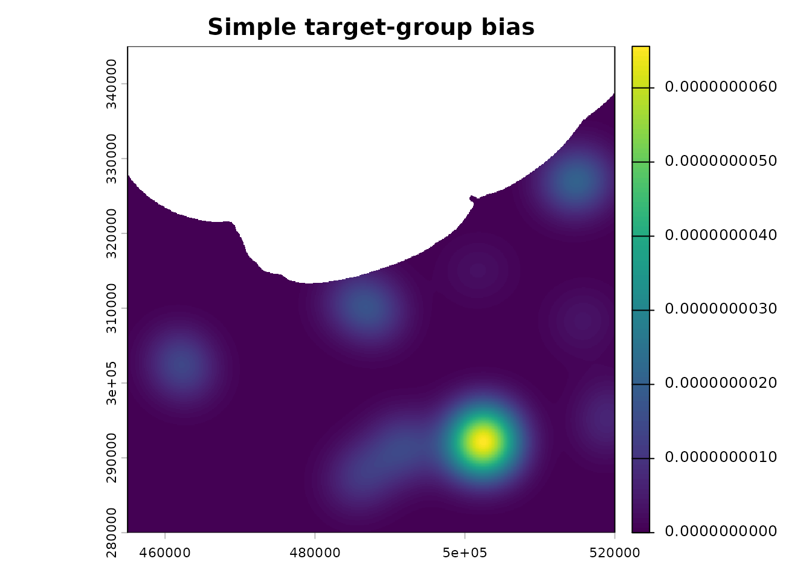
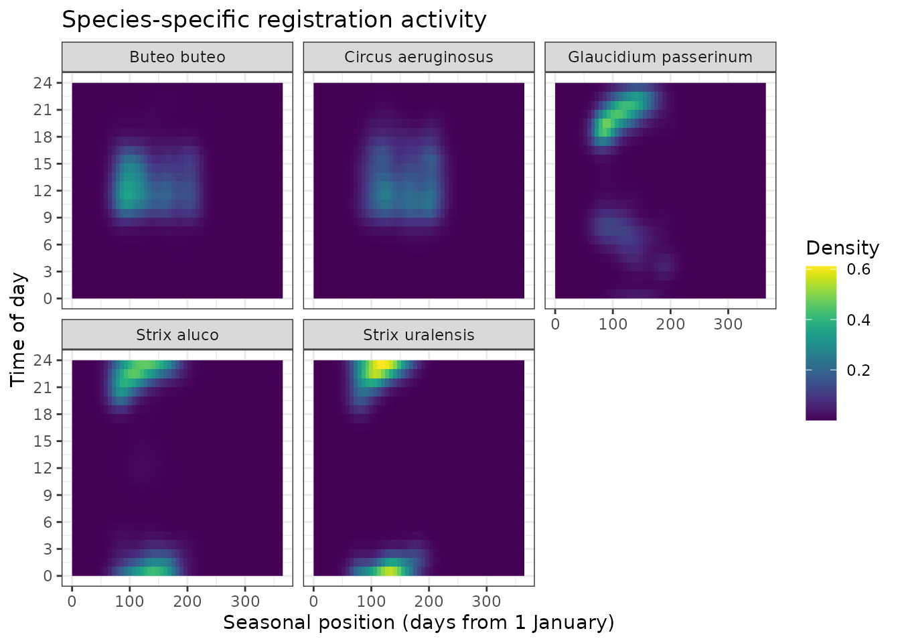
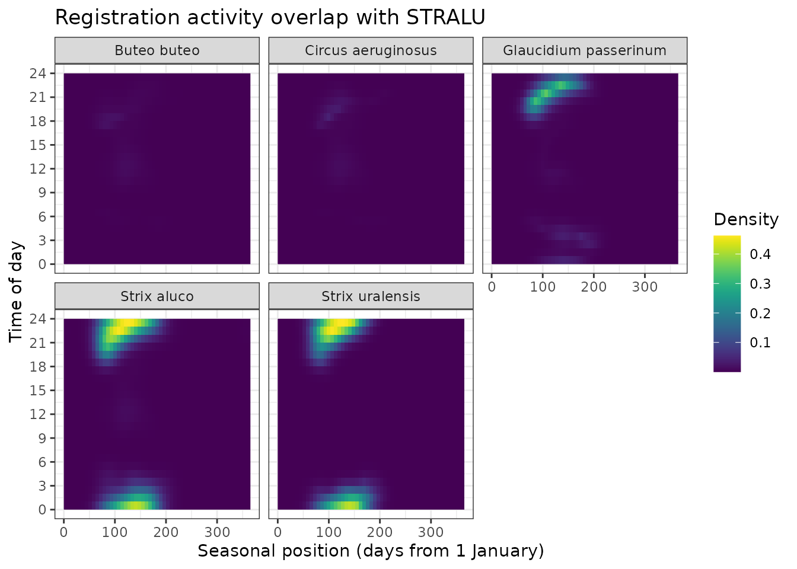

Overview
sdmhelpers provides helper functions for species
distribution modelling (SDM) workflows, with particular emphasis on
presence-background models implemented with maxnet. The
package contains tools for constructing sampling-bias surfaces from
target-group records, weighting target-group observations by seasonal or
combined seasonal and diel overlap, selecting complete spatial folds for
independent testing, screening environmental predictors, and evaluating
predictions using the true skill statistic (TSS).
Presence-only SDMs are sensitive to differences between the sampling
process that generated species observations and the process used to
select background locations. A commonly used approach is therefore to
select or weight background data so that they reflect similar sampling
bias to the presence data (Phillips et al. 2009; Elith et al. 2011).
sdmhelpers extends this idea by allowing records from a
target group to contribute unequally according to their temporal
similarity to the focal species.
The examples below use datasets distributed with
sdmhelpers. They are reduced or pseudonymised datasets
intended for demonstrating package functionality, not for biological
inference.
sdmhelpers was developed as part of the project
HiQBioDiv: High-resolution quantification of biodiversity for
conservation and management, funded by the Latvian Council of
Science (Ref. No. VPP-VARAM-DABA-2024/1-0002).
The development version can be installed from GitHub with:
# install.packages("remotes")
remotes::install_github("aavotins/sdmhelpers")Packages used in this vignette:
library(sdmhelpers)
library(sf)
#> Linking to GEOS 3.12.1, GDAL 3.8.4, PROJ 9.4.0; sf_use_s2() is TRUE
library(ggplot2)
library(terra)
#> terra 1.9.50
library(maxnet)
library(SDMtune)
#>
#> _____ ____ __ ___ __
#> / ___/ / __ \ / |/ // /_ __ __ ____ ___
#> \__ \ / / / // /|_/ // __// / / // __ \ / _ \
#> ___/ // /_/ // / / // /_ / /_/ // / / // __/
#> /____//_____//_/ /_/ \__/ \__,_//_/ /_/ \___/ version 1.3.3
#>
#> To cite this package in publications type: citation("SDMtune").
#>
#> Attaching package: 'SDMtune'
#> The following object is masked from 'package:maxnet':
#>
#> thresholds
library(ENMeval)
#> This is ENMeval version 2.0.6.
#> For worked examples, please consult the vignette: <https://jamiemkass.github.io/ENMeval/articles/ENMeval-2.0-vignette.html>.Example data
Several example datasets are included in the package. The examples in this vignette use bird and bryophyte observations, spatial presence and background locations, spatial blocks, a 100-m grid, known habitat-inventory dates, and an example environmental raster.
data("aves_small", package = "sdmhelpers")
data("bryophyta_one", package = "sdmhelpers")
data("habitat_inventories", package = "sdmhelpers")
data("points100", package = "sdmhelpers")
data("example_grid", package = "sdmhelpers")
example_grid=terra::unwrap(example_grid)
data("example_presences", package = "sdmhelpers")
data("example_background", package = "sdmhelpers")
data("example_independent_blocks", package = "sdmhelpers")
data("egv_names", package = "sdmhelpers")The environmental raster used later in the vignette is stored in
inst/extdata.
egv_file <- system.file("extdata",
"example_egv.tif",
package = "sdmhelpers")Simple target-group bias surface
Target-group background sampling uses observations of taxa that are expected to have been collected through a sampling process similar to that of the focal species. If sampling effort is spatially biased, drawing background data from the same biased sampling domain can reduce the contrast between presence and background sampling processes (Phillips et al. 2009).
Here, one species from aves_small is treated as the
focal species while all species form the target group. For this example,
the focal species is chosen programmatically as the species with the
largest number of records so that the example does not depend on a
particular species name.
target_species <- names(
sort(table(aves_small$species), decreasing = TRUE)
)[1]
target_species
#> [1] "Strix aluco"
target_group <- aves_smallMultiple observations can occur in the same 100-m grid cell. For the
spatial bias surface, records are therefore counted by grid cell and
supplied to kde_surface() as weights.
tg_counts <- aggregate(
list(n_records = rep(1, nrow(target_group))),
by = list(id100 = target_group$id100),
FUN = sum
)
idx <- match(tg_counts$id100, points100$id)
keep <- !is.na(idx)
tg_points <- points100[idx[keep], ]
tg_points$n_records <- tg_counts$n_records[keep]
tg_points
#> Simple feature collection with 1065 features and 7 fields
#> Geometry type: POINT
#> Dimension: XY
#> Bounding box: xmin: 459750 ymin: 285250 xmax: 519650 ymax: 329550
#> Projected CRS: LKS-92 / Latvia TM
#> First 10 features:
#> id yes tks50km rinda300 ID1km rinda500
#> 1714235 100mX4597Y3042 1 4221 385184 1kmX459Y304 236094
#> 1714987 100mX4598Y3044 1 4221 386590 1kmX459Y304 236995
#> 1719476 100mX4604Y3043 1 4221 386592 1kmX460Y304 236096
#> 1719478 100mX4604Y3045 1 4221 386592 1kmX460Y304 236996
#> 1723202 100mX4609Y3038 1 4221 383781 1kmX460Y303 235197
#> 1723204 100mX4609Y3040 1 4221 385188 1kmX460Y304 236097
#> 1723921 100mX4610Y3013 1 4221 372533 1kmX461Y301 230697
#> 1723922 100mX4610Y3014 1 4221 372533 1kmX461Y301 231597
#> 1723926 100mX4610Y3018 1 4221 373936 1kmX461Y301 231597
#> 1723950 100mX4610Y3042 1 4221 385189 1kmX461Y304 236097
#> geom n_records
#> 1714235 POINT (459750 304250) 1
#> 1714987 POINT (459850 304450) 1
#> 1719476 POINT (460450 304350) 1
#> 1719478 POINT (460450 304550) 1
#> 1723202 POINT (460950 303850) 1
#> 1723204 POINT (460950 304050) 2
#> 1723921 POINT (461050 301350) 1
#> 1723922 POINT (461050 301450) 3
#> 1723926 POINT (461050 301850) 2
#> 1723950 POINT (461050 304250) 1kde_surface() first bins point weights to the reference
raster and then applies Gaussian smoothing. This makes the calculation
practical for large rasters and large bandwidths. Kernel density
estimation in general is described by Silverman
(1986).
The example grid uses EPSG:3059, whose map units are metres, so
sigma = 3000 corresponds to a Gaussian bandwidth of 3 km.
With normalize = "pdf", the resulting surface is normalized
to integrate to one and represents the spatial probability density of
target-group sampling effort. It can therefore be used as a relative
sampling-bias surface for background sampling.
simple_bias <- kde_surface(
x = tg_points,
weight_field = "n_records",
sigma = 3000,
ref = example_grid,
normalize = "pdf",
mask = TRUE
)
terra::plot(simple_bias, main = "Simple target-group bias")
Unweighted target-group sampling-bias surface.
This simple approach assumes that every target-group record is equally informative about the sampling process affecting the focal species. The following sections relax that assumption.
Phenologically weighted target-group
Species observed by the same people or recording scheme may nevertheless have different seasonal detectability and/or availability. A species recorded mainly in winter, for example, may provide little information about sampling effort relevant to a species recorded mainly during late spring.
phenology_overlap_weights() estimates the overlap
between the day-of-year distribution of a focal species and each
comparison species using kernel-density overlap. The overlap coefficient
describes the common area of two estimated distributions (Pastore 2018; Pastore and Calcagnì 2019).
First, day of year is added to the bird records.
bird_dates <- aves_small
bird_dates$DoY <- as.POSIXlt(bird_dates$date)$yday + 1L
target_code <- bird_dates$code[
match(target_species, bird_dates$species)
]
target_code
#> [1] "STRALU"We then estimate phenological overlap between the focal species and every species in the target group.
phenology_weights <- phenology_overlap_weights(
target = bird_dates,
group = bird_dates,
target_code = target_code,
target_id = "code",
group_id = "code",
target_doy = "DoY",
group_doy = "DoY",
type = "2",
min_n = 5
)
phenology_weights[
order(phenology_weights$weight, decreasing = TRUE),
]
#> code overlap weight
#> STRALU STRALU 1.0000000 0.2659064
#> GLAPAS GLAPAS 0.8256341 0.2195414
#> STRURA STRURA 0.8053464 0.2141467
#> BUTBUT BUTBUT 0.6383454 0.1697401
#> CIRAER CIRAER 0.4913965 0.1306654The returned weight values sum to one across comparison
species with valid overlap estimates. Here, each target-group
observation receives the weight of its species. Records are then summed
within 100-m cells before KDE smoothing.
target_group_p <- merge(
target_group,
phenology_weights[, c("code", "weight")],
by = "code",
all.x = TRUE
)
target_group_p <- target_group_p[
is.finite(target_group_p$weight) &
!is.na(target_group_p$id100),
]
tg_weighted <- aggregate(
list(weight = target_group_p$weight),
by = list(id100 = target_group_p$id100),
FUN = sum
)
idx <- match(tg_weighted$id100, points100$id)
keep <- !is.na(idx)
tg_points_weighted <- points100[idx[keep], ]
tg_points_weighted$weight <- tg_weighted$weight[keep]
phenology_bias <- kde_surface(
x = tg_points_weighted,
weight_field = "weight",
sigma = 3000,
ref = example_grid,
normalize = "pdf",
mask = TRUE
)
terra::plot(
phenology_bias,
main = "Phenologically weighted target-group bias"
)Phenologically weighted target-group sampling-bias surface.
The weighted surface should be interpreted as a relative sampling-bias surface, not as an estimate of species occurrence probability. Its purpose is to describe where observations relevant to the focal species’ seasonal sampling process were more or less likely to have been collected.
Seasonally and dielly weighted target-group
For taxa whose detectability varies both seasonally and through the
day, seasonal overlap alone may be insufficient.
torus_overlap_many() represents season and time of day as
two circular dimensions and estimates overlap on a two-dimensional
torus. Circular treatment is important because both annual and daily
cycles wrap around their endpoints; see Mardia
and Jupp (2000) for directional
statistics and Ridout and Linkie (2009) for overlap estimation of diel
activity patterns.
The bird dataset contains date-time observations. Because this is an introductory vignette, the example uses the focal species with the largest number of valid date-times and compares it with every target-groups’ species.
target_species_torus <- target_species
reference_data <- aves_small[aves_small$species == target_species_torus &
!is.na(aves_small$date_time),]
comparison_data <- aves_small[!is.na(aves_small$date_time),]
reference_data$obs_date <- as.Date(reference_data$date_time)
reference_data$obs_time <- hms::as_hms(reference_data$date_time)
comparison_data$obs_date <- as.Date(comparison_data$date_time)
comparison_data$obs_time <- hms::as_hms(comparison_data$date_time)For speed, the example uses a coarser evaluation grid than would often be used in a final analysis.
torus_result <- torus_overlap_many(
reference_data = reference_data,
comparison_data = comparison_data,
comparison_group_col = "species",
reference_date_col = "obs_date",
reference_time_col = "obs_time",
comparison_date_col = "obs_date",
comparison_time_col = "obs_time",
reference_name = target_species_torus,
season_bw_days = 14,
daily_bw_hours = 1,
date_resolution_days = 7,
time_resolution_minutes = 60,
min_n = 5,
return_density = FALSE
)
torus_overlap <- torus_result$overlap
torus_overlap <- torus_overlap[
order(torus_overlap$overlap, decreasing = TRUE),
]
head(torus_overlap, 10)
#> reference comparison n_reference n_comparison overlap status
#> 4 Strix aluco Strix aluco 3004 3004 1.00000000 OK
#> 5 Strix aluco Strix uralensis 3004 137 0.86931899 OK
#> 3 Strix aluco Glaucidium passerinum 3004 330 0.41910228 OK
#> 2 Strix aluco Circus aeruginosus 3004 671 0.04184691 OK
#> 1 Strix aluco Buteo buteo 3004 2095 0.03477199 OKThe overlap coefficient ranges from zero to one for normalized densities. A large value indicates that a comparison species has a seasonal-diel observation distribution similar to the focal species.
To use these coefficients as relative species weights in a target group, they can be normalized across comparison species.
ok <- is.finite(torus_overlap$overlap)
torus_overlap$weight <- NA_real_
torus_overlap$weight[ok] <-
torus_overlap$overlap[ok] /
sum(torus_overlap$overlap[ok])
head(
torus_overlap[
order(torus_overlap$weight, decreasing = TRUE),
c("comparison", "overlap", "weight")
],
10
)
#> comparison overlap weight
#> 4 Strix aluco 1.00000000 0.42282580
#> 5 Strix uralensis 0.86931899 0.36757050
#> 3 Glaucidium passerinum 0.41910228 0.17720726
#> 2 Circus aeruginosus 0.04184691 0.01769395
#> 1 Buteo buteo 0.03477199 0.01470250These weights can be joined back to the individual observations and
passed to kde_surface() in exactly the same way as the
phenological weights above.
The overlap can also be visualised, when setting
return_density = TRUE
torus_result <- torus_overlap_many(
reference_data = reference_data,
comparison_data = comparison_data,
comparison_group_col = "species",
reference_date_col = "obs_date",
reference_time_col = "obs_time",
comparison_date_col = "obs_date",
comparison_time_col = "obs_time",
reference_name = target_species_torus,
season_bw_days = 14,
daily_bw_hours = 1,
date_resolution_days = 7,
time_resolution_minutes = 60,
min_n = 5,
return_density = TRUE
)
ggplot(torus_result$density,aes(x = seasonal_position_days,
y = decimal_hour,
fill = comparison_density)) +
geom_raster() +
facet_wrap(~ comparison) +
scale_y_continuous(breaks = seq(0, 24, by = 3)) +
viridis::scale_fill_viridis() +
labs(x = "Seasonal position (days from 1 January)",
y = "Time of day",
fill = "Density",
title = "Species-specific registration activity") +
theme_bw()
ggplot(torus_result$density,aes(x = seasonal_position_days,
y = decimal_hour,
fill = shared_density)) +
geom_raster() +
facet_wrap(~ comparison) +
scale_y_continuous(breaks = seq(0, 24, by = 3)) +
viridis::scale_fill_viridis() +
labs(x = "Seasonal position (days from 1 January)",
y = "Time of day",
fill = "Density",
title = "Registration activity overlap with STRALU") +
theme_bw()
Known inventory dates
Sometimes the dates of a survey or habitat inventory are known, while
the species itself was not necessarily recorded during that survey. In
this case, doy_kde_weights() can estimate how closely each
inventory date corresponds to the seasonal registration-activity
distribution of a target species.
The function estimates a wrapped day-of-year KDE from reference dates and evaluates that density at another set of dates. The wrapped construction reduces the artificial separation between observations near the end and beginning of a year. Bandwidth controls the degree of smoothing, as in conventional KDE (Silverman 1986).
The example below uses one bryophyte species, which is considered
old-growth forest specialist species, thus specifically searched during
habitat inventories, as the reference seasonal distribution and weights
the dates in habitat_inventories.
bryophyta_species <- names(
sort(table(bryophyta_one$species), decreasing = TRUE)
)[1]
reference_dates <- bryophyta_one$date[
bryophyta_one$species == bryophyta_species &
!is.na(bryophyta_one$date)
]
inventory_keep <- !is.na(habitat_inventories$date)
inventory_weights <- doy_kde_weights(
A_dates = reference_dates,
B_dates = habitat_inventories$date[inventory_keep],
scale = "percentile_A",
bw = "nrd0"
)
weighted_inventories <- habitat_inventories[inventory_keep, ]
weighted_inventories$phenology_weight <- inventory_weights$weightsWith scale = "percentile_A", weights describe how high
the estimated reference density is relative to density values across the
seasonal cycle. They are relative phenological correspondence scores
rather than occurrence probabilities.
aggregate(
phenology_weight ~ habitat_type,
data = weighted_inventories,
FUN = mean
)
#> habitat_type phenology_weight
#> 1 dune 0.7492080
#> 2 forest 0.7281414
#> 3 freshwater 0.6848989
#> 4 grassland 0.6864115
#> 5 heather 0.0630137
#> 6 mire 0.6161949The estimated seasonal reference curve can also be inspected directly.
plot(
inventory_weights$density$x,
inventory_weights$density$y,
type = "l",
xlab = "Day of year",
ylab = "Estimated reference density"
)Estimated seasonal registration-activity curve used for weighting known inventory dates.
Selecting an independent testing set
Random train-test splitting can give overly optimistic estimates of predictive performance when nearby observations are spatially dependent. Spatially structured resampling is therefore generally preferable when the intended prediction involves geographic transfer (Roberts et al. 2017).
sdmhelpers does not define the spatial blocks
themselves. Instead, select_folds_by_quota() and
select_joint_folds() select complete groups from fold
identifiers created elsewhere. Independence therefore comes from the
design of the folds, not from the selection function.
The package contains example presence records, background records, and independent spatial polygons.
pres_sf <- sf::st_as_sf(
example_presences,
coords = c("x", "y"),
crs = 3059
)
bg_sf <- sf::st_as_sf(
example_background,
coords = c("x", "y"),
crs = 3059
)
block_id <- setdiff(
names(example_independent_blocks),
attr(example_independent_blocks, "sf_column")
)[1]
pres_joined <- sf::st_join(
pres_sf,
example_independent_blocks[block_id],
join = sf::st_within,
left = TRUE
)
bg_joined <- sf::st_join(
bg_sf,
example_independent_blocks[block_id],
join = sf::st_within,
left = TRUE
)
pres_folds <- pres_joined[[block_id]]
bg_folds <- bg_joined[[block_id]]When both presences and background should be withheld from the same
spatial blocks, select_joint_folds() is convenient.
independent <- select_joint_folds(
pres_folds = pres_folds,
bg_folds = bg_folds,
target_prop = 0.25,
pres_bounds = c(0.20, 0.30),
bg_bounds = c(0.20, 0.30),
max_tries = 3000,
bg_match_weight = 1,
seed = 1,
print_report = FALSE
)
independent$selected_fold_ids
#> [1] "110" "117" "142" "153" "183" "186" "197" "208" "252" "280" "282" "291"
#> [13] "312" "323" "325" "340" "343" "353" "354" "380" "392" "397" "398" "4"
#> [25] "406" "407" "411" "413" "421" "433" "434" "44" "441" "459" "464" "475"
#> [37] "479" "490" "506" "511" "515" "516" "518" "519" "521" "523" "536" "537"
#> [49] "539" "543" "548" "553" "572" "590" "600" "606" "610" "613" "629" "631"
#> [61] "641" "643" "644" "645" "646" "647" "661" "670" "671" "675" "677" "68"
#> [73] "686" "697" "70" "703" "712" "715" "717" "722" "732" "734" "738" "749"
#> [85] "83" "95" "100" "101" "103" "104" "11" "116" "12" "124" "125" "126"
#> [97] "130" "144" "145" "147" "149" "152" "155" "18" "180" "192" "194" "198"
#> [109] "2" "201" "203" "211" "220" "228" "232" "237" "238" "242" "247" "255"
#> [121] "26" "262" "28" "287" "288" "289" "29" "292" "295" "3" "30" "326"
#> [133] "328" "330" "341" "347" "350" "352" "36" "363" "369" "375" "379" "388"
#> [145] "394" "402" "408" "42" "436" "438" "447" "453" "456" "457" "462" "463"
#> [157] "466" "482" "494" "495" "500" "525" "534" "540" "560" "564" "568" "571"
#> [169] "575" "58" "593" "596" "597" "598" "599" "60" "612" "617" "618" "634"
#> [181] "636" "64" "640" "649" "658" "66" "662" "664" "665" "666" "667" "676"
#> [193] "684" "693" "694" "696" "7" "721" "741" "75" "78" "8" "9" "91"
#> [205] "93" "98"
independent$summary[c(
"n_pres_selected",
"n_bg_selected",
"prop_pres_selected",
"prop_bg_selected"
)]
#> $n_pres_selected
#> 295
#> 694
#>
#> $n_bg_selected
#> 295
#> 9957
#>
#> $prop_pres_selected
#> 295
#> 0.24991
#>
#> $prop_bg_selected
#> 295
#> 0.2499122The returned logical vectors preserve the row order of the input data and can be used directly for subsetting.
pres_test <- example_presences[independent$pres_selected_idx, ]
pres_train <- example_presences[!independent$pres_selected_idx, ]
bg_test <- example_background[independent$bg_selected_idx, ]
bg_train <- example_background[!independent$bg_selected_idx, ]
c(
pres_train = nrow(pres_train),
pres_test = nrow(pres_test),
bg_train = nrow(bg_train),
bg_test = nrow(bg_test)
)
#> pres_train pres_test bg_train bg_test
#> 2084 694 30043 9957If only one type of observation needs to be selected, the simpler
select_folds_by_quota() can be used instead.
presence_only_selection <- select_folds_by_quota(
folds = pres_folds,
target_prop = 0.25,
bounds = c(0.20, 0.30),
seed = 1,
print_report = FALSE
)
presence_only_selection$summary$prop_selected
#> [1] 0.299964Screening predictor variance
Predictors with zero or extremely small variance in the data
available for model fitting can create numerical problems and cannot
meaningfully contribute to estimating an environmental response.
screen_egv_variance() checks predictor variance across
several SDM-relevant subsets rather than only across the complete
dataset.
The example environmental raster contains five ecogeographical variables.
env <- terra::rast(egv_file)
env
#> class : SpatRaster
#> size : 650, 650, 5 (nrow, ncol, nlyr)
#> resolution : 100, 100 (x, y)
#> extent : 455000, 520000, 280000, 345000 (xmin, xmax, ymin, ymax)
#> coord. ref. : LKS-92 / Latvia TM (EPSG:3059)
#> source : example_egv.tif
#> names : egv_280, egv_293, egv_302, egv_385, egv_400
#> min values : -0.466794, -0.719917, -0.397964, -1.461203, -0.37327
#> max values : 3.70894, 7.054723, 8.359298, 5.206886, 11.300995For a compact vignette example, a subset of the training background
is used to construct an SDMtune::SWD object.
set.seed(1)
bg_screen <- bg_train[sample.int(nrow(bg_train), 5000), ]
train_swd <- SDMtune::prepareSWD(
species = "example_species",
p = pres_train,
a = bg_screen,
env = env
)
#> ℹ Extracting predictor information for presence locations
#> Warning: ! 2009 locations are NA for some environmental variables and have been
#> discarded
#> ✔ Extracting predictor information for presence locations [29ms]
#>
#> ℹ Extracting predictor information for absence/background locations
#> Warning: ! 4761 locations are NA for some environmental variables and have been
#> discarded
#> ✔ Extracting predictor information for absence/background locations [91ms]
#> The environmental-domain check is added by supplying
env.
variance_screen <- screen_egv_variance(
train = train_swd,
env = env,
env_sample_n = 5000,
seed = 1,
sd_tol = 0,
verbose = FALSE
)
variance_screen$keep
#> [1] "egv_280" "egv_293" "egv_302" "egv_385" "egv_400"
variance_screen$remove
#> character(0)A predictor is retained only if it passes every requested check. The
diagnostics component provides the standard deviation and
failure reason for every evaluated predictor/subset combination.
head(variance_screen$diagnostics)
#> check subset variable n_finite sd failed reason
#> 1 training all egv_280 314 1.7145963 FALSE passed
#> 2 training all egv_293 314 2.0859101 FALSE passed
#> 3 training all egv_302 314 1.5297335 FALSE passed
#> 4 training all egv_385 314 0.7250362 FALSE passed
#> 5 training all egv_400 314 0.8009791 FALSE passed
#> 6 training presences egv_280 75 1.5562103 FALSE passedFitting a small maxnet model
The package is designed to support, rather than replace, SDM
software. The following compact example fits a maxnet model
after the independent split created above. Only predictors retained by
the variance screen are used.
First, extract environmental values for the training and independent-testing locations.
training_set <- SDMtune::prepareSWD(
species = "example_species",
p = pres_train,
a = bg_train,
env = env
)
#> ℹ Extracting predictor information for presence locations
#> Warning: ! 2009 locations are NA for some environmental variables and have been
#> discarded
#> ✔ Extracting predictor information for presence locations [17ms]
#>
#> ℹ Extracting predictor information for absence/background locations
#> Warning: ! 28679 locations are NA for some environmental variables and have been
#> discarded
#> ✔ Extracting predictor information for absence/background locations [41ms]
#>
training_set=SDMtune::addSamplesToBg(training_set)
testing_set <- SDMtune::prepareSWD(
species = "example_species",
p = pres_test,
a = bg_test,
env = env
)
#> ℹ Extracting predictor information for presence locations
#> Warning: ! 613 locations are NA for some environmental
#> variables and have been discarded
#> ✔ Extracting predictor information for presence locations [16ms]
#> ℹ Extracting predictor information for absence/background locations
#> Warning: ! 8890 locations are NA for some environmental variables and have been
#> discarded
#> ✔ Extracting predictor information for absence/background locations [31ms]
#>
testing_set=SDMtune::addSamplesToBg(testing_set)Fit the model using presences (1) and background
(0).
maxnet_model <- maxnet::maxnet(
p = training_set@pa,
data = training_set@data
)Evaluating models with TSS
The true skill statistic is
\[ \mathrm{TSS} = \mathrm{sensitivity} + \mathrm{specificity} - 1, \]
and was proposed for SDM evaluation as an alternative to measures such as Cohen’s kappa (Allouche et al. 2006).
max_tss() evaluates all unique finite prediction
thresholds and returns the threshold that maximizes TSS together with
sensitivity and specificity.
For presence-background models, background locations are not confirmed absences. Consequently, the value reported as specificity is operationally the proportion of background records classified as negative, and the resulting TSS should be interpreted as presence-background discrimination rather than classification accuracy against known true absences.
p_pos <- predict(
maxnet_model,
newdata = testing_set@data[testing_set@pa == 1, ],
type = "cloglog"
)
p_neg <- predict(
maxnet_model,
newdata = testing_set@data[testing_set@pa == 0, ],
type = "cloglog"
)
tss_result <- max_tss(
p_pos = p_pos,
p_neg = p_neg
)
tss_result
#> tss threshold sensitivity specificity
#> 0.5388469 0.2693770 0.8765432 0.6623037The selected threshold can then be used to convert continuous predictions into binary classifications if a binary map or confusion matrix is required.
Cross-validation TSS with ENMeval
The independent testing set created above is reserved for evaluating the final model and should not be used during model tuning. Alternative model settings can instead be compared by cross-validation using only the training data. Spatially structured cross-validation is particularly useful when observations are spatially autocorrelated because it reduces spatial dependence between calibration and validation data and provides a more stringent assessment of spatial transferability than random partitioning (Roberts et al. 2017).
ENMeval provides several approaches for partitioning occurrence and
background records and for evaluating alternative Maxent and
maxnet model settings (Muscarella et al. 2014; Kass et al. 2021). In this example, the
training records are divided into four geographically structured groups
using ENMeval::get.block().
block_folds <- ENMeval::get.block(occ = training_set@coords[training_set@pa == 1, ],
bg = training_set@coords[training_set@pa == 0, ])The block method divides occurrence localities into four spatial groups and assigns background records to the corresponding geographic partitions. Because the example coordinates are in the projected LKS-92 / Latvia TM coordinate reference system, the partitions are defined using projected X and Y coordinates rather than geographic longitude and latitude.
The resulting fold identifiers are supplied to
ENMevaluate() as user-defined partitions. This makes it
possible to use the same spatial groups for both presence and background
observations while retaining explicit control over the cross-validation
design.
For this example, three feature-class combinations and three
regularization multipliers are evaluated, producing nine candidate model
settings. Linear (L), quadratic (Q), and
combined linear-quadratic (LQ) feature classes control the
shapes of fitted environmental responses, whereas the regularization
multiplier controls the strength of penalization and therefore model
complexity.
presences=cbind(training_set@coords[training_set@pa == 1, ],
training_set@data[training_set@pa == 1, ])
background=cbind(training_set@coords[training_set@pa == 0, ],
training_set@data[training_set@pa == 0, ])
pirmais <- ENMeval::ENMevaluate(occs = presences,
bg = background,
algorithm = 'maxnet',
partitions = 'user',
user.grp=list(occs.grp=block_folds$occs.grp,
bg.grp=block_folds$bg.grp),
tune.args = list(fc = c('L','Q','LQ'),
rm = c(0.5,1,2)),
other.settings=list(validation.bg='partition'),
user.eval = tss_user_eval)
#> Package ecospat is not installed, so Continuous Boyce Index (CBI) cannot be calculated.
#> *** Running initial checks... ***
#> * Please make sure that the user-specified partitions are spatial, else validation.bg should be set to "full". The "partition" option only makes sense when partitions represent different regions of the study extent. See ?ENMevaluate for details.
#> * Variable values were input along with coordinates and not as raster data, so no raster predictions can be generated and AICc is calculated with background data for Maxent models.
#> * Model evaluations with user-defined 4-fold cross validation...
#>
#> *** Running ENMeval v2.0.6 with maxnet from maxnet package v0.1.4 ***
#> | | | 0% | |======== | 11% | |================ | 22% | |======================= | 33% | |=============================== | 44% | |======================================= | 56% | |=============================================== | 67% | |====================================================== | 78% | |============================================================== | 89% | |======================================================================| 100%
#> ENMevaluate completed in 0 minutes 6.7 seconds.The argument user.eval = tss_user_eval adds TSS as a
custom evaluation metric. For every cross-validation fold,
ENMeval supplies predictions for training occurrences,
validation occurrences, training background records and validation
background records to tss_user_eval(), which then applies
max_tss() to these validation predictions and returns the
maximum TSS and its associated classification threshold.
When
other.settings = list(validation.bg = "partition")is used, validation occurrences are compared only with background
records from the corresponding validation partition. This means that
both presences and background records are spatially withheld during
evaluation. If validation.bg = "full" is used instead,
validation occurrences are compared with the combined training and
validation background predictions.
For presence-background models, background locations are not confirmed absences. Consequently, the reported specificity is the proportion of background predictions falling below the selected threshold rather than specificity calculated from known true absences. The resulting TSS should therefore be interpreted as a measure of discrimination between presences and background rather than conventional classification accuracy.
tss_user_eval() selects the threshold maximizing TSS
separately for the training and validation predictions. Consequently,
both tss.train and tss.val are optimized on
the same data on which they are evaluated. In particular,
tss.val should therefore be regarded as a cross-validation
metric for comparing candidate models rather than as a fully independent
estimate of threshold-based predictive performance.
The model-level results returned by ENMeval summarize
the fold-level statistics and can be inspected with:
ENMeval::eval.results(pirmais)
#> fc rm tune.args auc.train cbi.train auc.diff.avg auc.diff.sd auc.val.avg
#> 1 L 0.5 fc.L_rm.0.5 0.8714644 NA 0.07945517 0.022225244 0.8265177
#> 2 Q 0.5 fc.Q_rm.0.5 0.8733380 NA 0.07111489 0.049356734 0.8213454
#> 3 LQ 0.5 fc.LQ_rm.0.5 0.8911808 NA 0.06290713 0.033151576 0.8538288
#> 4 L 1.0 fc.L_rm.1 0.8714923 NA 0.07545160 0.013408658 0.8314957
#> 5 Q 1.0 fc.Q_rm.1 0.8733705 NA 0.07406087 0.043186846 0.8354066
#> 6 LQ 1.0 fc.LQ_rm.1 0.8910181 NA 0.06465808 0.027427198 0.8523159
#> 7 L 2.0 fc.L_rm.2 0.8714086 NA 0.06784453 0.002873099 0.8394832
#> 8 Q 2.0 fc.Q_rm.2 0.8728591 NA 0.07261047 0.043548790 0.8340900
#> 9 LQ 2.0 fc.LQ_rm.2 0.8893073 NA 0.06882316 0.019308799 0.8475699
#> auc.val.sd cbi.val.avg cbi.val.sd or.10p.avg or.10p.sd or.mtp.avg or.mtp.sd
#> 1 0.06515442 NA NA 0.1725146 0.20266343 0.02631579 0.03038686
#> 2 0.06393752 NA NA 0.1600877 0.08605885 0.02631579 0.03038686
#> 3 0.05354472 NA NA 0.1849415 0.22886072 0.02631579 0.03038686
#> 4 0.06116684 NA NA 0.1593567 0.17662852 0.02631579 0.03038686
#> 5 0.07081886 NA NA 0.1337719 0.05425139 0.01315789 0.02631579
#> 6 0.05359382 NA NA 0.1586257 0.21004351 0.02631579 0.03038686
#> 7 0.05489059 NA NA 0.1461988 0.15069121 0.01315789 0.02631579
#> 8 0.06719898 NA NA 0.1337719 0.05425139 0.01315789 0.02631579
#> 9 0.05741302 NA NA 0.1593567 0.17662852 0.01315789 0.02631579
#> sens.val.avg sens.val.sd spec.val.avg spec.val.sd thr.val.avg thr.val.sd
#> 1 0.7733918 0.10818713 0.8029094 0.12455619 0.4409865 0.2682956
#> 2 0.8004386 0.11579280 0.8009088 0.09314715 0.3590680 0.2133038
#> 3 0.8684211 0.15789474 0.7350150 0.09750529 0.3324927 0.2717441
#> 4 0.7602339 0.10877822 0.8212688 0.10944054 0.4560333 0.2567586
#> 5 0.8128655 0.15272006 0.8048555 0.11914765 0.3993499 0.2140476
#> 6 0.8552632 0.14493607 0.7459984 0.08987392 0.3498289 0.2762962
#> 7 0.7602339 0.10877822 0.8268857 0.10782651 0.4674289 0.2529230
#> 8 0.8654971 0.09465739 0.7537042 0.13609890 0.3247499 0.1256810
#> 9 0.8135965 0.10894511 0.7878394 0.12253615 0.4021141 0.2485099
#> tss.train.avg tss.train.sd tss.val.avg tss.val.sd AICc delta.AICc
#> 1 0.6023010 0.03060439 0.5763013 0.09630676 941.0513 12.115677
#> 2 0.6331861 0.03023382 0.6013474 0.11202094 963.8214 34.885785
#> 3 0.6740021 0.05803389 0.6034361 0.10076023 933.0259 4.090330
#> 4 0.6010455 0.03197616 0.5815027 0.09067639 941.0898 12.154199
#> 5 0.6315777 0.02755788 0.6177210 0.12669991 963.9343 34.998677
#> 6 0.6696376 0.05634489 0.6012615 0.09244315 934.1113 5.175668
#> 7 0.5999035 0.02966228 0.5871197 0.08706305 941.2359 12.300267
#> 8 0.6262000 0.03072282 0.6192012 0.13265557 964.3478 35.412167
#> 9 0.6498189 0.05407192 0.6014359 0.09896934 928.9356 0.000000
#> w.AIC ncoef
#> 1 1.931342e-03 5
#> 2 2.194791e-08 5
#> 3 1.067926e-01 10
#> 4 1.894499e-03 5
#> 5 2.074335e-08 5
#> 6 6.206731e-02 10
#> 7 1.761068e-03 5
#> 8 1.686905e-08 5
#> 9 8.255531e-01 7Fold-specific results can be examined with:
ENMeval::eval.results.partitions(pirmais)
#> tune.args fold auc.val auc.diff cbi.val or.mtp or.10p
#> 1 fc.L_rm.0.5 1 0.8137455 0.06758341 NA 0.05263158 0.05263158
#> 2 fc.L_rm.0.5 2 0.7601151 0.11275353 NA 0.05263158 0.47368421
#> 3 fc.L_rm.0.5 3 0.8159626 0.06759836 NA 0.00000000 0.05263158
#> 4 fc.L_rm.0.5 4 0.9162476 0.06988538 NA 0.00000000 0.11111111
#> 5 fc.Q_rm.0.5 1 0.7478283 0.13250706 NA 0.05263158 0.05263158
#> 6 fc.Q_rm.0.5 2 0.8356908 0.01909032 NA 0.05263158 0.26315789
#> 7 fc.Q_rm.0.5 3 0.8014197 0.08629100 NA 0.00000000 0.15789474
#> 8 fc.Q_rm.0.5 4 0.9004430 0.04657120 NA 0.00000000 0.16666667
#> 9 fc.LQ_rm.0.5 1 0.7976495 0.11064213 NA 0.05263158 0.10526316
#> 10 fc.LQ_rm.0.5 2 0.8462993 0.03538269 NA 0.05263158 0.52631579
#> 11 fc.LQ_rm.0.5 3 0.8447022 0.05812269 NA 0.00000000 0.05263158
#> 12 fc.LQ_rm.0.5 4 0.9266643 0.04748102 NA 0.00000000 0.05555556
#> 13 fc.L_rm.1 1 0.8127236 0.06845567 NA 0.05263158 0.05263158
#> 14 fc.L_rm.1 2 0.7780428 0.09552867 NA 0.05263158 0.42105263
#> 15 fc.L_rm.1 3 0.8156163 0.06796583 NA 0.00000000 0.05263158
#> 16 fc.L_rm.1 4 0.9196001 0.06985625 NA 0.00000000 0.11111111
#> 17 fc.Q_rm.1 1 0.7514052 0.12973318 NA 0.05263158 0.05263158
#> 18 fc.Q_rm.1 2 0.8881579 0.03416020 NA 0.00000000 0.15789474
#> 19 fc.Q_rm.1 3 0.8024584 0.08591674 NA 0.00000000 0.15789474
#> 20 fc.Q_rm.1 4 0.8996049 0.04643335 NA 0.00000000 0.16666667
#> 21 fc.LQ_rm.1 1 0.8019928 0.10503296 NA 0.05263158 0.05263158
#> 22 fc.LQ_rm.1 2 0.8352796 0.04556141 NA 0.05263158 0.47368421
#> 23 fc.LQ_rm.1 3 0.8440097 0.05823553 NA 0.00000000 0.05263158
#> 24 fc.LQ_rm.1 4 0.9279813 0.04980242 NA 0.00000000 0.05555556
#> 25 fc.L_rm.2 1 0.8111906 0.06934893 NA 0.05263158 0.05263158
#> 26 fc.L_rm.2 2 0.8059211 0.06752365 NA 0.00000000 0.36842105
#> 27 fc.L_rm.2 3 0.8194252 0.06395902 NA 0.00000000 0.05263158
#> 28 fc.L_rm.2 4 0.9213961 0.07054652 NA 0.00000000 0.11111111
#> 29 fc.Q_rm.2 1 0.7554931 0.12778216 NA 0.05263158 0.05263158
#> 30 fc.Q_rm.2 2 0.8822368 0.03032440 NA 0.00000000 0.15789474
#> 31 fc.Q_rm.2 3 0.8014197 0.08584563 NA 0.00000000 0.15789474
#> 32 fc.Q_rm.2 4 0.8972102 0.04648970 NA 0.00000000 0.16666667
#> 33 fc.LQ_rm.2 1 0.8053143 0.09756031 NA 0.05263158 0.05263158
#> 34 fc.LQ_rm.2 2 0.8162007 0.05982469 NA 0.00000000 0.42105263
#> 35 fc.LQ_rm.2 3 0.8374307 0.06185949 NA 0.00000000 0.05263158
#> 36 fc.LQ_rm.2 4 0.9313338 0.05604817 NA 0.00000000 0.11111111
#> tss.val thr.val sens.val spec.val tss.train
#> 1 0.5840572 0.41914114 0.8947368 0.6893204 0.6287021
#> 2 0.4925987 0.08071654 0.7894737 0.7031250 0.6052765
#> 3 0.5197368 0.71163642 0.6315789 0.8881579 0.6165309
#> 4 0.7088123 0.55245194 0.7777778 0.9310345 0.5586945
#> 5 0.5314257 0.29024885 0.8421053 0.6893204 0.6287021
#> 6 0.6572368 0.16345037 0.8947368 0.7625000 0.6134793
#> 7 0.4868421 0.66235635 0.6315789 0.8552632 0.6772283
#> 8 0.7298851 0.32021649 0.8333333 0.8965517 0.6133348
#> 9 0.5467552 0.42438041 0.7894737 0.7572816 0.7344294
#> 10 0.6015625 0.04355653 1.0000000 0.6015625 0.6044470
#> 11 0.5197368 0.66574347 0.6842105 0.8355263 0.7066084
#> 12 0.7456897 0.19629035 1.0000000 0.7456897 0.6505234
#> 13 0.5840572 0.42673961 0.8947368 0.6893204 0.6271777
#> 14 0.5134046 0.11472587 0.7368421 0.7765625 0.6091475
#> 15 0.5197368 0.71799392 0.6315789 0.8881579 0.6133639
#> 16 0.7088123 0.56467369 0.7777778 0.9310345 0.5544928
#> 17 0.5314257 0.30181062 0.8421053 0.6893204 0.6325131
#> 18 0.7265625 0.16274972 1.0000000 0.7265625 0.6145622
#> 19 0.4868421 0.65622779 0.6315789 0.8552632 0.6701024
#> 20 0.7260536 0.47661128 0.7777778 0.9482759 0.6091331
#> 21 0.5564640 0.47405611 0.7894737 0.7669903 0.7290941
#> 22 0.5786184 0.05872007 0.9473684 0.6312500 0.6057373
#> 23 0.5328947 0.67297505 0.6842105 0.8486842 0.7026496
#> 24 0.7370690 0.19356447 1.0000000 0.7370690 0.6410696
#> 25 0.5840572 0.44114963 0.8947368 0.6893204 0.6271777
#> 26 0.5337171 0.12927956 0.7368421 0.7968750 0.6052765
#> 27 0.5197368 0.72199795 0.6315789 0.8881579 0.6094050
#> 28 0.7109674 0.57728862 0.7777778 0.9331897 0.5577547
#> 29 0.5314257 0.32573151 0.8421053 0.6893204 0.6366507
#> 30 0.7390625 0.17582657 1.0000000 0.7390625 0.6171429
#> 31 0.4802632 0.31426790 0.8421053 0.6381579 0.6618312
#> 32 0.7260536 0.48317380 0.7777778 0.9482759 0.5891751
#> 33 0.5784364 0.31729632 0.9473684 0.6310680 0.7074260
#> 34 0.5472862 0.11042584 0.7894737 0.7578125 0.6029032
#> 35 0.5328947 0.69552666 0.6842105 0.8486842 0.6844390
#> 36 0.7471264 0.48520773 0.8333333 0.9137931 0.6045076Cross-validation TSS and independent-test TSS serve different purposes in this workflow. Cross-validation is used to compare candidate feature classes, regularization multipliers or other model settings using only the training data. Once the preferred settings have been selected and the final model has been fitted, the completely withheld independent testing set can be used for a separate assessment of predictive performance.
For a strictly independent threshold-based assessment, the classification threshold should be selected from training or cross-validation data and then applied unchanged to the independent testing data, rather than re-optimizing the threshold on the independent test set.